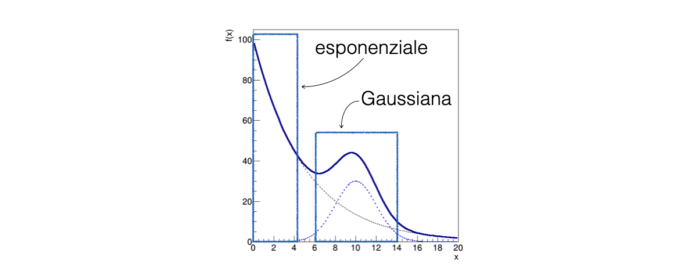

12. Fit of Binned Distributions#
12.1. TODOs#
12.2. Introduction#
The least squares and maximum likelihood methods can also be applied in the case of histograms, i.e., binned distributions, where one wants to fit a function to the distribution of counts in each bin:

In this case, the content of each bin is a number of events \(n_i\)
If the number of bins and the average number of events in each of them is not small, one can assume that the random variable \(n_i\) follows a Poisson statistic
12.2.1. Fit of binned distributions with the least squares method#
In the case of least squares, the function Q2(θ) is usually the following (Neyman’s formulation):
The value of \(y_i\) from the previous lesson is constituted by \(\mathbf{n_i}\)
The uncertainty on \(\mathbf{n_i}\) is given by its square root, following the Poisson statistic
The value of \(x_i\) is the center of the corresponding bin
The number of bins in the histogram is \(N\)
12.2.2. Fit of binned distributions with the maximum likelihood method#
In the case of maximum likelihood, it is assumed that in each bin the counts follow a Poissonian probability distribution with expected value \(\mu = F_i(\theta)\):
where \(F_i(\theta)\) is the expected number of events in each bin
12.2.3. Choosing amongst the least squares and the maximum likelihood#
In the case of few counts present in the bins,
Bins without counts do not contribute to the fit in the case of least squares, despite the absence of events being important information
It is recommended to use the maximum likelihood method
In the case of many counts present in the bins, the two methods are equivalent, and often the least squares method is computationally simpler
12.3. A regression exercise with binned data#
Starting from a sample of events along a variable x, the objective is to determine the parameters of the probability distribution of the variable
Assuming that this model has a given form, consisting of an exponential background distribution added to a Gaussian signal distribution:
In this model both \(N_{S}\) and \(N_{B}\) are assumed to be unknown, therefore the fit has to be performed with an extended Likelihood
Graphically, the model has a decreasing trend that rises when the Gaussian term becomes significant, as shown in the figure:

The solid line represents the total model
The two dashed lines represent the two terms of the sum, which can be thought of as a signal peak superimposed on a slowly decreasing background
12.3.1. Reading the data from a file#
The starting sample corresponds to a data taking of 10,000 events, stored in the file
data.txtWhen events are plotted in a histogram, as it’s a counting experiment, the content of each bin fluctuates stochastically:

In the case of 10,000 events, the relative fluctuations are much more pronounced than in the case of 10,000,000 events, as expected
12.3.2. Determining the fit parameters#
To determine the parameters θ, the extremum of a function needs to be found
with many parameters
in the presence of statistical fluctuations
The
iminuitlibrary, based on the CERN MINUIT software, offers robust tools to perform this task
12.3.3. Defining the statistical model for the fit#
The minimization performed by the fit is based on the comparison between the number of events observed in each bin with respect to the expectation
This expectation is calculated by integrating the model probability density function
Therefore, the input model
iminuitneeds to be provided with is based on cumulative distribution functionsdef mod_total (bin_edges, N_signal, mu, sigma, N_background, tau): return N_signal * norm.cdf (bin_edges, mu, sigma) + \ N_background * expon.cdf (bin_edges, 0, tau )
The edges of the input histogram are a necessary input for the probability calculations
12.3.4. Setting up the fitting algorithm#
The cost function, for which an extreme has to be found when varying the \(\theta\) parameters, has to be defined (it’s a
pythonobject):from iminuit.cost import ExtendedBinnedNLL # ... my_cost_func = ExtendedBinnedNLL (bin_content, bin_edges, mod_total)
The algorithm that searches for the extreme has to be initialized (it’s also a
pythonobject):my_minuit = Minuit (my_cost_func, N_signal = N_events, mu = sample_mean, sigma = sample_sigma, # signal input parameters N_background = N_events, tau = 1.) # background input parameters
besides the cost function, the algorithm takes as input the initial values of the parameters of
mod_totalto be used in the search for the extreme
The fit operation is performed with the following command, invoking the least squares method:
my_minuit.migrad () print (my_minuit.valid) display (my_minuit)
After the fit, the
my_minuitobject contains all the information concerning the fit results
12.3.5. Helping Minuit to find the right minimum#
The fit rarely succeeds autonomously, as due to the large number of parameters θ and the stochastic fluctuations of the bin contents, the program struggles to find the correct minimum of the \(Q^2\) function
Some variabiles are bound to be positive:
my_minuit.limits['N_signal', 'N_background', 'sigma', 'tau'] = (0, None)
To facilitate the fit, it’s very effective to provide the
Minuitobject with a starting point not far from the final result, based on the knowledge of the problem:The parameters
N_signalandN_backgroundare the integrals of the two background and signal functions, so they are related to the integral of the histogram:N_events = sum (bin_content) # and, when initializing the Minuit object: N_signal = N_events N_background = N_events
The exponential is certainly decreasing:
# when initializing the Minuit object: tau = 1.
The maximum of the Gaussian is around the middle of the interval (what other options may be chosen to initialize the
muparameter?):sample_mean = np.mean (sample) # and, when initializing the Minuit object: mu = sample_mean
The width of the Gaussian is correlated to the histogram’s sigma for a certain level:
sample_sigma = np.std (sample) # and, when initializing the Minuit object: sigma = sample_sigma
12.3.6. How to deal with one parameter at a time#
Sometimes, even starting from reasonable parameter values, the fit does not converge to the sought extremum
In this case, it can be helpful to identify a region of the x spectrum where only a subset of the parameters is relevant 
12.3.7. Determine the exponential slope#
A partial fit only below \(x = 5\) and above \(x = 15\) with only the parameters of the background component of the model free to float allows for calculating a preliminary estimate of
N_backgroundandtau:# setting the signal to zero for a first background-only preliminary fit my_minuit.values["N_signal"] = 0 # fixing the value of the signal parameters to a constant value # (i.e. they are not considered in the fit) my_minuit.fixed["N_signal", "mu", "sigma"] = True # temporary mask avoiding the signal region bin_centres = 0.5 * (bin_edges[1:] + bin_edges[:-1]) my_cost_func.mask = (bin_centres < 5) | (15 < bin_centres) my_minuit.migrad ()
A partial fit with the background component of the model frozen to the values found so far, which are known to the
Minuitobject, allows for calculating a preliminary estimate ofN_signal,muandsigma:my_cost_func.mask = None # remove mask my_minuit.fixed = False # release all parameters my_minuit.fixed["N_background", "tau"] = True # fix background parameters my_minuit.values["N_signal"] = N_events - my_minuit.values["N_background"] # do not start at the limit my_minuit.migrad ()
12.3.8. The final fit#
For the final fit, all parameters are free to float and the
Minuitobject will start the extremum search from the result of the last fit performed:my_minuit.fixed = False # release all parameters my_minuit.migrad () print (my_minuit.valid) display (my_minuit)
12.4. Analyzing the regression results#
The result of the fit consists in several pieces of information:
whether an extremum has been found and how the
Minuitalgorithm did behave;the point value of the parameters at the extreme;
the uncertainty associated with the result.
The command
display (my_minuit)
shows the whole information concerning the fit, including a plot of the input data with the fitting model superimposed
Each piece of information may be extracted from the
Minuitobject, for it to be used in the program
12.4.1. Study the fit convergence#
To determine the success of the numerical algorithm, the
Minuit.validvariable is used: which should beTruein case of success:print (my_minuit.valid)
12.4.2. Parameter values and uncertainty#
As for the least squares case, the value of the parameters and their uncertainty can be obtained from the Minuit object:
for par, val, err in zip (my_minuit.parameters, my_minuit.values, my_minuit.errors) : print(f'{par} = {val:.3f} +/- {err:.3f}') # formatted output
The uncertainty is by default calculated by inverting the Hessian matrix of the cost function, which is equivalent to applying the Cramér-Rao theorem assuming that the estimator is efficient
To calculate the uncertainty by looking at the likelihood profile, which is a multi-dimensional generalization of the graphic method, an additional call to the
minosfunction needs to be added:my_minuit.minos ()
This will produce positive and negative uncertainties which, in general, are not symmetric around each parameter value:
for key in my_minuit.parameters : # parameters is a tuple containing the parameter names print ('parameter ' + key + ': ' + str (my_minuit.values[key]) + ' + ' + str (my_minuit.merrors[key].upper) + ' ' + str (my_minuit.merrors[key].lower) )
12.5. Unbinned maximum likelihood fit#
In the case of an unbinned maximum likelihood fit, the model function to be used is the probability density function itself. For a Gaussian case:
def mod_signal_unb (x, mu, sigma) : return norm.pdf(x, mu, sigma)
The proper cost function shall be deployed for the fitting:
from iminuit.cost import UnbinnedNLL # ... my_cost_func_unb = UnbinnedNLL (subsample, mod_signal_unb)
The fitting functionalities then work in the same way as described for the binned maximum likelihood case
In this case, the value of the cost function cannot be used as an approximation of the \(Q^2\)
12.6. Least squares and maximum likelihood#
The least squares method (LS) and the maximum likelihood method (ML) are parameter estimators of a model based on data
The two estimators have different properties and exhibit different behaviors: even though they use the same data, they can produce different results
12.6.1. Least squares method for histogram fitting#
When applying the least squares method, the input function representing the statistical model simply scales the probability density function by the total number of events. For a gaussian case:
def func_approx (x, N_events, mean, sigma, bin_width) : return N_events * norm.pdf (x, mean, sigma) * bin_width
The proper cost function shall be deployed for the fitting:
from iminuit.cost import LeastSquares # ... least_squares = LeastSquares (bin_centres, bin_content, sigma_y, func_approx)
The fitting functionalities then work in the same way as described for the binned maximum likelihood case
12.7. Fit quality#
In case the probability density distribution of the individual \(n_i\) follows a Gaussian, the \(Q^2_{\text{min}}\) quantity follows the \(\chi^2\) distribution with \(N-k\) degrees of freedom, where \(N\) is the number of fitted bins and \(k\) is the number of determined parameters
If each bin has sufficient events so that the Poisson distribution resembles a Gaussian, the result of cost function at the extreme may be used as an approximate \(Q^2_{\text{min}}\) value to run the \(\chi^2\) test to determine the goodness of the fit, both for the maximum likelihood (extended and not) and least squares techniques